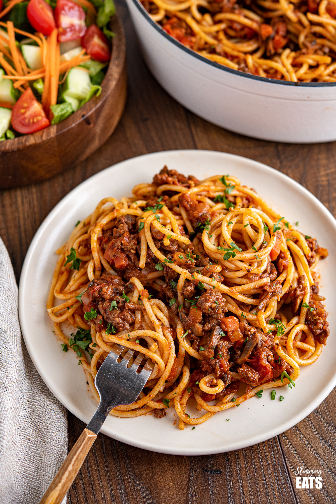

Spaghetti Bolognese

Description
The following recipe is for an utterly scrumptious spaghetti bolognese.
I found this recipe whilst hiking through the hills of Bologna, and I encountered
an old Italian couple. Their family had lived in these hills for generations,
and they swore that their bolognese recipe was unmatched.
I sat down to eat dinner with them that evening, and they were not wrong.
This bolognese will blow your mind! Luckily they left me their recipe, which
includes a secret ingredient...
See if you can spot it!
Ingredients
- Beef mince
- Pork mince
- Tomato passata
- Two red onions
- Three cloves garlic
- 850ml beef stock
- 2 tsp of all - Oregano, sage, basil, thyme
- 4 bay leaves
- 1 scoop vanilla ice cream
Method
- Finely chop the onions and garlic, and add onions to a pan along with the
olive oil. Cook for 10 minutes then add the garlic. Stir for 1 minute.
- Turn the heat to high and add all the mince. Brown the meat and then add the
herbs and beef stock.
- Add the passata and the bay leaves, bring to the boil and then simmer (lid on) for 1 hour
- Remove the lid and simmer for a further 30 minutes, stirring regularly. Add the
ice cream 5 minutes before the end and mix well.
- Cook up your desired amount of spaghetti, and then add this to the bolognese
sauce with some of the pasta water.
- Stir round then serve hot!